15 cases · 5 reviewers (Jason, ljy, lys, wxy, zfy) · filled in from 2026/11/05 to 2026/11/08
CONVENTIONS.md section 5: with stated priorities, compare them in turn, then rent; otherwise by rent. Only confirmed candidates are compared. Candidates equal on every ranking value are tied, shown as "=".gold_answers.json) are unchanged and still use the frozen data.| Group | Cases | W | Reviewers vs gold | Reviewers vs agent | Agent vs gold |
|---|---|---|---|---|---|
| User stated a ranking | A01, A04, A08, A09, G01, G02, G05 | 0.40 | 0.49 | 0.22 | 0.16 |
| User stated no ranking | A02, A05, B01, B02, B03, B06, G03, G04 | 0.39 | 0.34 | 0.03 | 0.36 |
"Reviewers vs agent" and "Agent vs gold" cover only the 11 original cases (the 11/05 agent). The 4 replacement cases are compared with the frozen system and listed on the next page.
| Case | Ranking stated | Candidates | W | Reviewers' mean order | Gold order | Reviewers vs gold | Same first as gold | Agent / system order | Reviewers vs agent/system | Agent/system vs gold |
|---|---|---|---|---|---|---|---|---|---|---|
| A01 | yes | 3 | 0.76 | B > C > A | B=C > A | 0.82 | 5/5 | B > C > A | 0.73 | 0.82 |
| A02 | no | 3 | 0.12 | C > A > B | B > C > A | 0.07 | 2/5 | B > C > A | 0.07 | 1.00 |
| A04 | yes | 3 | 0.71 | C > B > A | C > B > A | 0.80 | 5/5 | C > B > A | 0.80 | 1.00 |
| A05 | no | 3 | 0.28 | C > A > B | A > C > B | 0.33 | 2/5 | C > A > B | 0.47 | 0.33 |
| A08 replacement | yes | 5 | 0.73 | A > D > E > B > C | A > D > E > B > C | 0.72 | 5/5 | A > D > E > B > C (system) | 0.72 | 1.00 |
| A09 replacement | yes | 5 | 0.30 | A > D > B > C > E | D > A > B > E > C | 0.48 | 2/5 | D > A > B > E > C (system) | 0.48 | 1.00 |
| B01 replacement | no | 3 | 1.00 | A > B > C | A > B > C | 1.00 | 5/5 | A > B > C (system) | 1.00 | 1.00 |
| B02 | no | 3 | 0.76 | B > A > C | A=B > C | 0.82 | 5/5 | C > A > B | -0.73 | -0.82 |
| B03 | no | 3 | 0.28 | A > C > B | C > A > B | 0.07 | 1/5 | C > A > B | 0.07 | 1.00 |
| B06 | no | 3 | 0.14 | C > A > B | B > A > C | -0.30 | 1/5 | C > B > A | 0.13 | -0.33 |
| G01 | yes | 3 | 0.16 | A > C > B | A > C > B | 0.33 | 3/5 | B > C > A | -0.33 | -1.00 |
| G02 | yes | 3 | 0.04 | A > C > B | A > B=C | 0.16 | 3/5 | C > B > A | -0.07 | -0.82 |
| G03 | no | 3 | 0.16 | A > C > B | C > A > B | 0.20 | 1/5 | C > A > B | 0.20 | 1.00 |
| G04 replacement | no | 5 | 0.39 | D > E > A > B > C | D > A=E > B > C | 0.57 | 3/5 | E > D > C > B > A (system) | 0.20 | 0.11 |
| G05 | yes | 3 | 0.07 | B > C > A | B > A=C | 0.13 | 3/5 | B > A > C | -0.03 | 0.82 |
"=" means tied: these candidates have exactly the same ranking values (rent, commute and so on). "(system)" is the frozen system's order of the replacement candidates; the others are the agent's order from 11/05.
| Reviewer | A01 | A02 | A04 | A05 | A08 | A09 | B01 | B02 | B03 | B06 | G01 | G02 | G03 | G04 | G05 | Mean |
|---|---|---|---|---|---|---|---|---|---|---|---|---|---|---|---|---|
| Jason | 0.82 | 0.33 | 1.00 | 0.33 | 0.40 | 0.20 | 1.00 | 0.82 | 0.33 | 1.00 | 1.00 | 0.82 | -0.33 | 0.74 | -0.82 | 0.51 |
| ljy | 0.82 | -0.33 | 1.00 | -1.00 | 0.20 | 0.80 | 1.00 | 0.82 | -0.33 | -0.33 | 0.33 | 0.82 | -0.33 | 0.95 | 0.82 | 0.35 |
| lys | 0.82 | -0.33 | 1.00 | 1.00 | 1.00 | 1.00 | 1.00 | 0.82 | 0.33 | -1.00 | 0.33 | 0.82 | 0.33 | 0.11 | -1.00 | 0.41 |
| wxy | 0.82 | -0.33 | 0.00 | 1.00 | 1.00 | 1.00 | 1.00 | 0.82 | -1.00 | -0.82 | 1.00 | -0.82 | 0.33 | 0.95 | 0.82 | 0.38 |
| zfy | 0.82 | 1.00 | 1.00 | 0.33 | 1.00 | -0.60 | 1.00 | 0.82 | 1.00 | -0.33 | -1.00 | -0.82 | 1.00 | 0.11 | 0.82 | 0.41 |
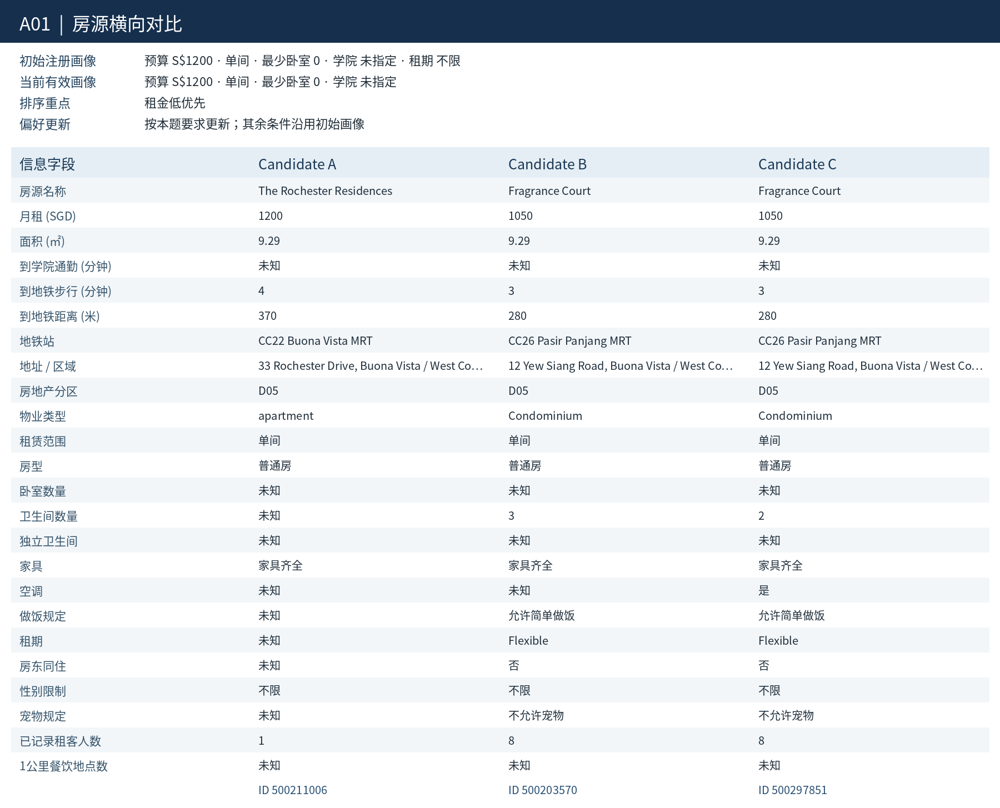
| Reviewer | A | B | C | Order | vs gold | vs agent |
|---|---|---|---|---|---|---|
| Jason | 3 | 2 | 1 | C > B > A | 0.82 | 0.33 |
| ljy | 3 | 2 | 1 | C > B > A | 0.82 | 0.33 |
| lys | 3 | 1 | 2 | B > C > A | 0.82 | 1.00 |
| wxy | 3 | 1 | 2 | B > C > A | 0.82 | 1.00 |
| zfy | 3 | 1 | 2 | B > C > A | 0.82 | 1.00 |
| Mean rank | 3.0 | 1.4 | 1.6 | B > C > A | 0.82 | 0.73 |
| Candidate | Listing ID | Source | Agent rank | Matches? | Gold rank | Reviewers ranking it first (ties count) |
|---|---|---|---|---|---|---|
| A | 500211006 | agent top 3 (11/05 run) | 3 | match | 5/5 | 0 |
| B | 500203570 | agent top 3 (11/05 run) | 1 | match | 2/5 | 3 |
| C | 500297851 | agent top 3 (11/05 run) | 2 | match | 3/5 | 2 |
The gold rank is the rank among all matching listings (for example 57/62); where the ranking values are identical, listings are ordered by ID, but count as tied in comparisons. The agent rank is the order of the agent's 11/05 recommendation.
Gold order: B=C > A · same first as gold: 5/5
Agent order (11/05 run): B > C > A · vs gold τ-b = 0.82
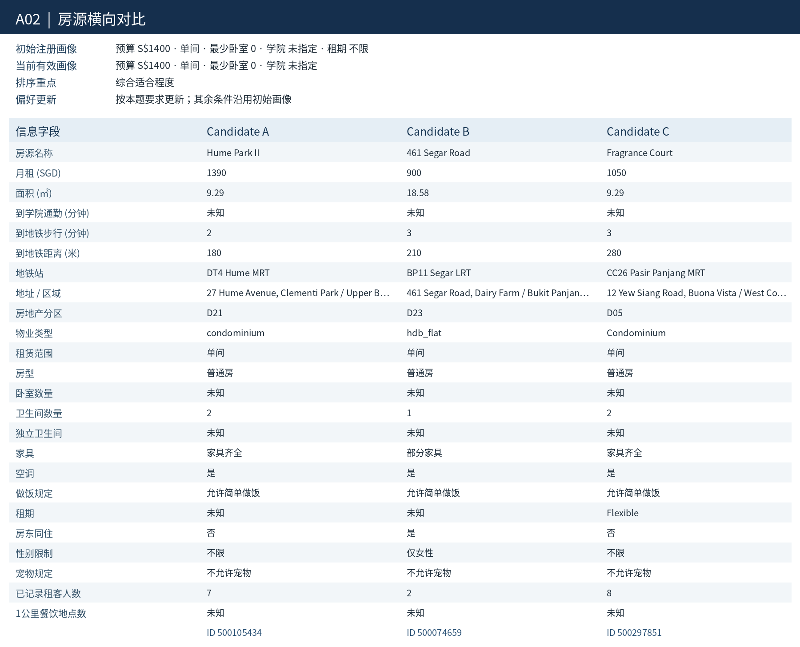
| Reviewer | A | B | C | Order | vs gold | vs agent |
|---|---|---|---|---|---|---|
| Jason | 2 | 1 | 3 | B > A > C | 0.33 | 0.33 |
| ljy | 2 | 3 | 1 | C > A > B | -0.33 | -0.33 |
| lys | 2 | 3 | 1 | C > A > B | -0.33 | -0.33 |
| wxy | 2 | 3 | 1 | C > A > B | -0.33 | -0.33 |
| zfy | 3 | 1 | 2 | B > C > A | 1.00 | 1.00 |
| Mean rank | 2.2 | 2.2 | 1.6 | C > A > B | 0.07 | 0.07 |
| Candidate | Listing ID | Source | Agent rank | Matches? | Gold rank | Reviewers ranking it first (ties count) |
|---|---|---|---|---|---|---|
| A | 500105434 | agent top 3 (11/05 run) | 3 | match | 10/12 | 0 |
| B | 500074659 | agent top 3 (11/05 run) | 1 | match | 2/12 | 2 |
| C | 500297851 | agent top 3 (11/05 run) | 2 | match | 4/12 | 3 |
The gold rank is the rank among all matching listings (for example 57/62); where the ranking values are identical, listings are ordered by ID, but count as tied in comparisons. The agent rank is the order of the agent's 11/05 recommendation.
Gold order: B > C > A · same first as gold: 2/5
Agent order (11/05 run): B > C > A · vs gold τ-b = 1.00
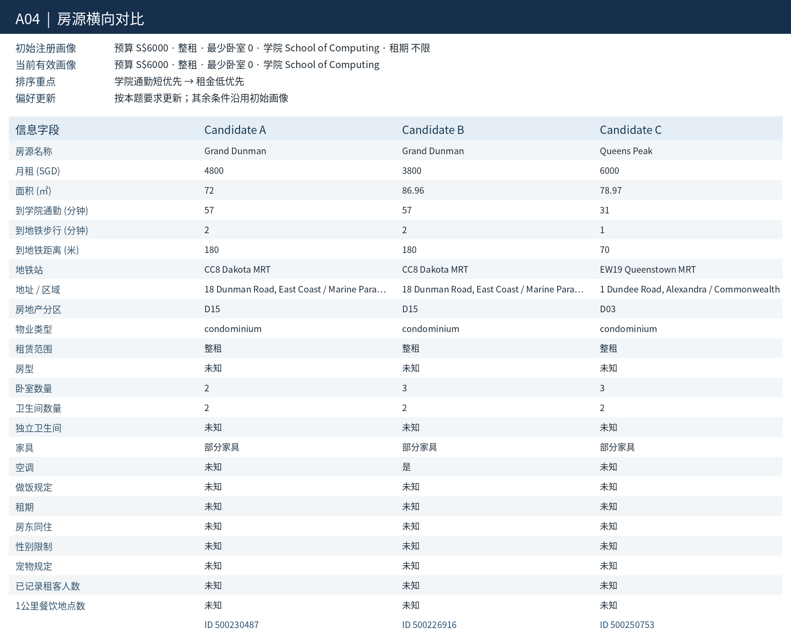
| Reviewer | A | B | C | Order | vs gold | vs agent |
|---|---|---|---|---|---|---|
| Jason | 3 | 2 | 1 | C > B > A | 1.00 | 1.00 |
| ljy | 3 | 2 | 1 | C > B > A | 1.00 | 1.00 |
| lys | 3 | 2 | 1 | C > B > A | 1.00 | 1.00 |
| wxy | 1 | 2 | 1 | A=C > B | 0.00 | 0.00 |
| zfy | 3 | 2 | 1 | C > B > A | 1.00 | 1.00 |
| Mean rank | 2.7 | 2.2 | 1.1 | C > B > A | 0.80 | 0.80 |
| Candidate | Listing ID | Source | Agent rank | Matches? | Gold rank | Reviewers ranking it first (ties count) |
|---|---|---|---|---|---|---|
| A | 500230487 | agent top 3 (11/05 run) | 3 | match | 45/57 | 1 |
| B | 500226916 | agent top 3 (11/05 run) | 2 | match | 44/57 | 0 |
| C | 500250753 | agent top 3 (11/05 run) | 1 | match | 13/57 | 5 |
The gold rank is the rank among all matching listings (for example 57/62); where the ranking values are identical, listings are ordered by ID, but count as tied in comparisons. The agent rank is the order of the agent's 11/05 recommendation.
Gold order: C > B > A · same first as gold: 5/5
Agent order (11/05 run): C > B > A · vs gold τ-b = 1.00
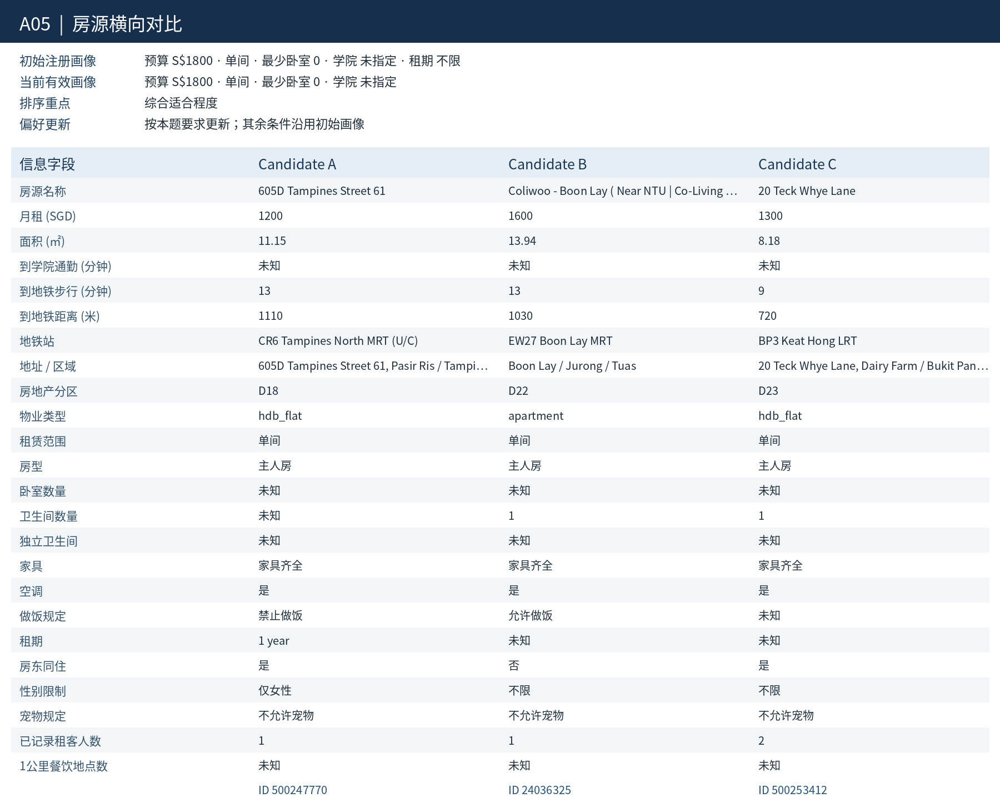
| Reviewer | A | B | C | Order | vs gold | vs agent |
|---|---|---|---|---|---|---|
| Jason | 2 | 3 | 1 | C > A > B | 0.33 | 1.00 |
| ljy | 3 | 1 | 2 | B > C > A | -1.00 | -0.33 |
| lys | 1 | 3 | 2 | A > C > B | 1.00 | 0.33 |
| wxy | 1 | 3 | 2 | A > C > B | 1.00 | 0.33 |
| zfy | 2 | 3 | 1 | C > A > B | 0.33 | 1.00 |
| Mean rank | 1.8 | 2.6 | 1.6 | C > A > B | 0.33 | 0.47 |
| Candidate | Listing ID | Source | Agent rank | Matches? | Gold rank | Reviewers ranking it first (ties count) |
|---|---|---|---|---|---|---|
| A | 500247770 | agent top 3 (11/05 run) | 2 | match | 1/4 | 2 |
| B | 24036325 | agent top 3 (11/05 run) | 3 | match | 3/4 | 1 |
| C | 500253412 | agent top 3 (11/05 run) | 1 | match | 2/4 | 2 |
The gold rank is the rank among all matching listings (for example 57/62); where the ranking values are identical, listings are ordered by ID, but count as tied in comparisons. The agent rank is the order of the agent's 11/05 recommendation.
Gold order: A > C > B · same first as gold: 2/5
Agent order (11/05 run): C > A > B · vs gold τ-b = 0.33
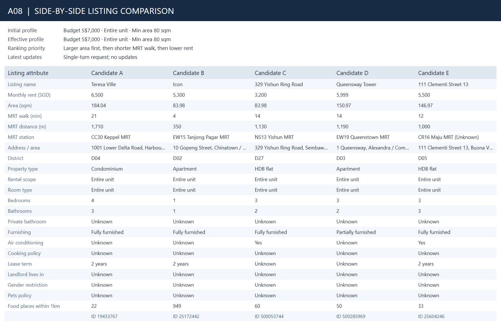
| Reviewer | A | B | C | D | E | Order | vs gold | vs system |
|---|---|---|---|---|---|---|---|---|
| Jason | 1 | 2 | 5 | 4 | 3 | A > B > E > D > C | 0.40 | 0.40 |
| ljy | 1 | 2 | 4 | 5 | 3 | A > B > E > C > D | 0.20 | 0.20 |
| lys | 1 | 4 | 5 | 2 | 3 | A > D > E > B > C | 1.00 | 1.00 |
| wxy | 1 | 4 | 5 | 2 | 3 | A > D > E > B > C | 1.00 | 1.00 |
| zfy | 1 | 4 | 5 | 2 | 3 | A > D > E > B > C | 1.00 | 1.00 |
| Mean rank | 1.0 | 3.2 | 4.8 | 3.0 | 3.0 | A > D > E > B > C | 0.72 | 0.72 |
| Candidate | Listing ID | Source | System rank | Matches? | Gold rank | Reviewers ranking it first (ties count) |
|---|---|---|---|---|---|---|
| A | 19433767 | gold top 3 | 1/62 | match | 1/62 | 5 |
| B | 25172442 | random from the gold answer | 57/62 | match | 57/62 | 0 |
| C | 500053744 | cheapest of the other matches | 59/62 | match | 59/62 | 0 |
| D | 500285969 | gold top 3 | 2/62 | match | 2/62 | 0 |
| E | 25604246 | gold top 3 | 3/62 | match | 3/62 | 0 |
The gold rank is the rank among all matching listings (for example 57/62); where the ranking values are identical, listings are ordered by ID, but count as tied in comparisons. The system rank is the frozen system's rank among all matching listings (without the model).
Gold order: A > D > E > B > C · same first as gold: 5/5
System order (the frozen system, without the model): A > D > E > B > C · vs gold τ-b = 1.00
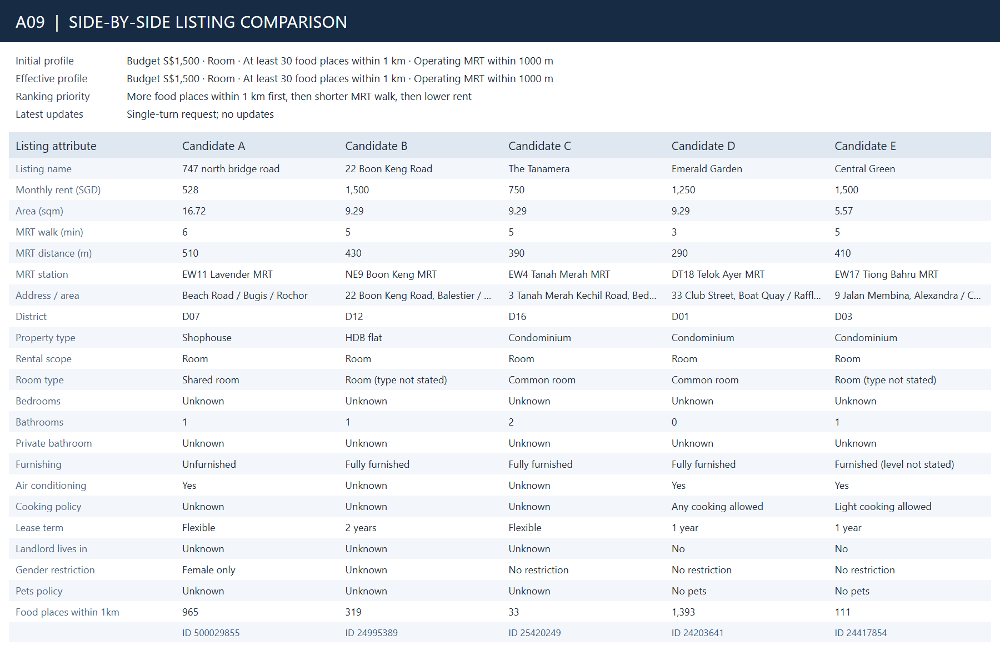
| Reviewer | A | B | C | D | E | Order | vs gold | vs system |
|---|---|---|---|---|---|---|---|---|
| Jason | 1 | 4 | 2 | 3 | 5 | A > C > D > B > E | 0.20 | 0.20 |
| ljy | 1 | 3 | 5 | 2 | 4 | A > D > B > E > C | 0.80 | 0.80 |
| lys | 2 | 3 | 5 | 1 | 4 | D > A > B > E > C | 1.00 | 1.00 |
| wxy | 2 | 3 | 5 | 1 | 4 | D > A > B > E > C | 1.00 | 1.00 |
| zfy | 4 | 1 | 2 | 5 | 3 | B > C > E > A > D | -0.60 | -0.60 |
| Mean rank | 2.0 | 2.8 | 3.8 | 2.4 | 4.0 | A > D > B > C > E | 0.48 | 0.48 |
| Candidate | Listing ID | Source | System rank | Matches? | Gold rank | Reviewers ranking it first (ties count) |
|---|---|---|---|---|---|---|
| A | 500029855 | gold top 3 | 2/45 | match | 2/45 | 2 |
| B | 24995389 | gold top 3 | 3/45 | match | 3/45 | 1 |
| C | 25420249 | cheapest of the other matches | 42/45 | match | 42/45 | 0 |
| D | 24203641 | gold top 3 | 1/45 | match | 1/45 | 2 |
| E | 24417854 | random from the gold answer | 13/45 | match | 13/45 | 0 |
The gold rank is the rank among all matching listings (for example 57/62); where the ranking values are identical, listings are ordered by ID, but count as tied in comparisons. The system rank is the frozen system's rank among all matching listings (without the model).
Gold order: D > A > B > E > C · same first as gold: 2/5
System order (the frozen system, without the model): D > A > B > E > C · vs gold τ-b = 1.00
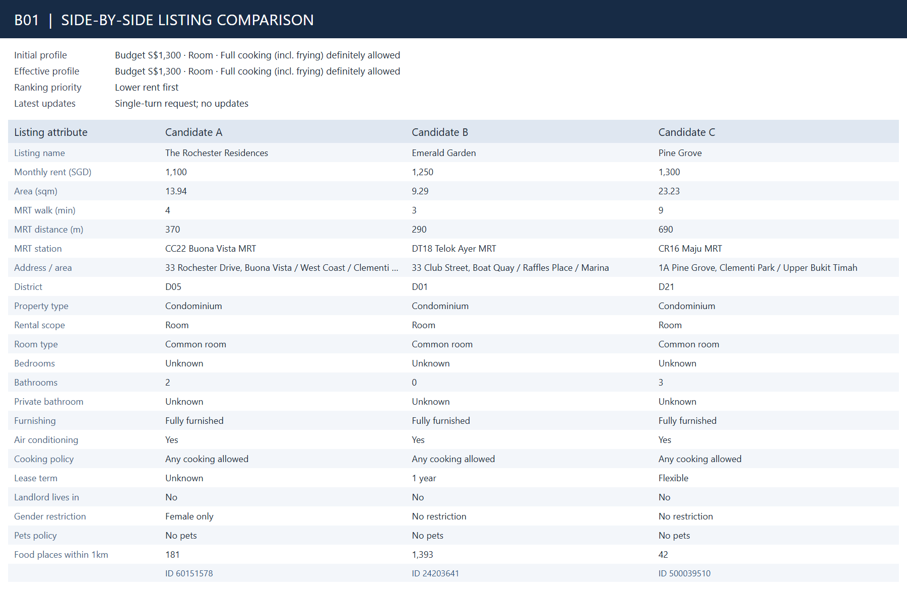
| Reviewer | A | B | C | Order | vs gold | vs system |
|---|---|---|---|---|---|---|
| Jason | 1 | 2 | 3 | A > B > C | 1.00 | 1.00 |
| ljy | 1 | 2 | 3 | A > B > C | 1.00 | 1.00 |
| lys | 1 | 2 | 3 | A > B > C | 1.00 | 1.00 |
| wxy | 1 | 2 | 3 | A > B > C | 1.00 | 1.00 |
| zfy | 1 | 2 | 3 | A > B > C | 1.00 | 1.00 |
| Mean rank | 1.0 | 2.0 | 3.0 | A > B > C | 1.00 | 1.00 |
| Candidate | Listing ID | Source | System rank | Matches? | Gold rank | Reviewers ranking it first (ties count) |
|---|---|---|---|---|---|---|
| A | 60151578 | gold top 3 | 1/3 | match | 1/3 | 5 |
| B | 24203641 | gold top 3 | 2/3 | match | 2/3 | 0 |
| C | 500039510 | gold top 3 | 3/3 | match | 3/3 | 0 |
The gold rank is the rank among all matching listings (for example 57/62); where the ranking values are identical, listings are ordered by ID, but count as tied in comparisons. The system rank is the frozen system's rank among all matching listings (without the model).
Gold order: A > B > C · same first as gold: 5/5
System order (the frozen system, without the model): A > B > C · vs gold τ-b = 1.00
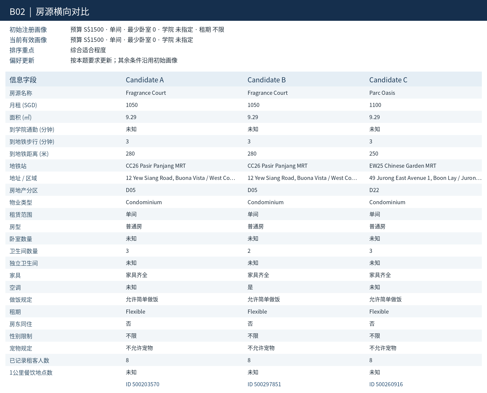
| Reviewer | A | B | C | Order | vs gold | vs agent |
|---|---|---|---|---|---|---|
| Jason | 2 | 1 | 3 | B > A > C | 0.82 | -1.00 |
| ljy | 1 | 2 | 3 | A > B > C | 0.82 | -0.33 |
| lys | 2 | 1 | 3 | B > A > C | 0.82 | -1.00 |
| wxy | 2 | 1 | 3 | B > A > C | 0.82 | -1.00 |
| zfy | 1 | 2 | 3 | A > B > C | 0.82 | -0.33 |
| Mean rank | 1.6 | 1.4 | 3.0 | B > A > C | 0.82 | -0.73 |
| Candidate | Listing ID | Source | Agent rank | Matches? | Gold rank | Reviewers ranking it first (ties count) |
|---|---|---|---|---|---|---|
| A | 500203570 | agent top 3 (11/05 run) | 2 | match | 5/30 | 2 |
| B | 500297851 | agent top 3 (11/05 run) | 3 | match | 6/30 | 3 |
| C | 500260916 | agent top 3 (11/05 run) | 1 | match | 8/30 | 0 |
The gold rank is the rank among all matching listings (for example 57/62); where the ranking values are identical, listings are ordered by ID, but count as tied in comparisons. The agent rank is the order of the agent's 11/05 recommendation.
Gold order: A=B > C · same first as gold: 5/5
Agent order (11/05 run): C > A > B · vs gold τ-b = -0.82
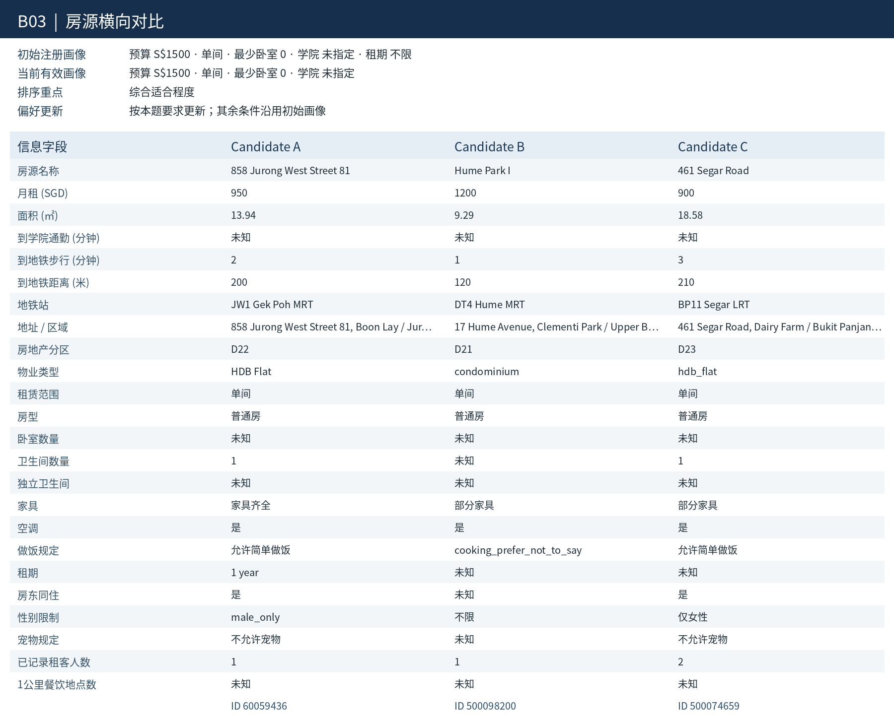
| Reviewer | A | B | C | Order | vs gold | vs agent |
|---|---|---|---|---|---|---|
| Jason | 1 | 3 | 2 | A > C > B | 0.33 | 0.33 |
| ljy | 1 | 2 | 3 | A > B > C | -0.33 | -0.33 |
| lys | 1 | 3 | 2 | A > C > B | 0.33 | 0.33 |
| wxy | 2 | 1 | 3 | B > A > C | -1.00 | -1.00 |
| zfy | 2 | 3 | 1 | C > A > B | 1.00 | 1.00 |
| Mean rank | 1.4 | 2.4 | 2.2 | A > C > B | 0.07 | 0.07 |
| Candidate | Listing ID | Source | Agent rank | Matches? | Gold rank | Reviewers ranking it first (ties count) |
|---|---|---|---|---|---|---|
| A | 60059436 | agent top 3 (11/05 run) | 2 | match | 7/35 | 3 |
| B | 500098200 | agent top 3 (11/05 run) | 3 | match | 15/35 | 1 |
| C | 500074659 | agent top 3 (11/05 run) | 1 | match | 4/35 | 1 |
The gold rank is the rank among all matching listings (for example 57/62); where the ranking values are identical, listings are ordered by ID, but count as tied in comparisons. The agent rank is the order of the agent's 11/05 recommendation.
Gold order: C > A > B · same first as gold: 1/5
Agent order (11/05 run): C > A > B · vs gold τ-b = 1.00
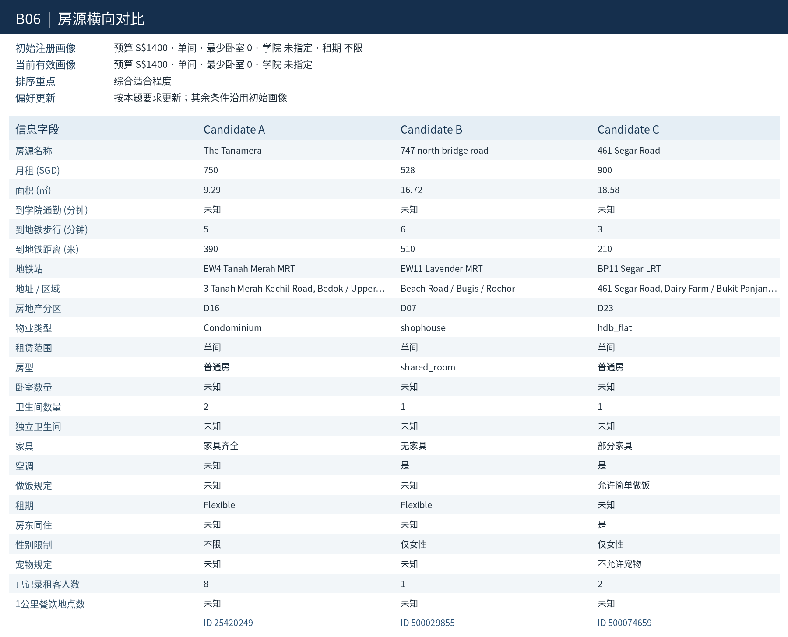
| Reviewer | A | B | C | Order | vs gold | vs agent |
|---|---|---|---|---|---|---|
| Jason | 2 | 1 | 3 | B > A > C | 1.00 | -0.33 |
| ljy | 1 | 3 | 2 | A > C > B | -0.33 | -0.33 |
| lys | 2 | 3 | 1 | C > A > B | -1.00 | 0.33 |
| wxy | 1 | 2 | 1 | A=C > B | -0.82 | 0.00 |
| zfy | 3 | 2 | 1 | C > B > A | -0.33 | 1.00 |
| Mean rank | 1.9 | 2.4 | 1.7 | C > A > B | -0.30 | 0.13 |
| Candidate | Listing ID | Source | Agent rank | Matches? | Gold rank | Reviewers ranking it first (ties count) |
|---|---|---|---|---|---|---|
| A | 25420249 | agent top 3 (11/05 run) | 3 | match | 2/45 | 2 |
| B | 500029855 | agent top 3 (11/05 run) | 2 | match | 1/45 | 1 |
| C | 500074659 | agent top 3 (11/05 run) | 1 | match | 7/45 | 3 |
The gold rank is the rank among all matching listings (for example 57/62); where the ranking values are identical, listings are ordered by ID, but count as tied in comparisons. The agent rank is the order of the agent's 11/05 recommendation.
Gold order: B > A > C · same first as gold: 1/5
Agent order (11/05 run): C > B > A · vs gold τ-b = -0.33
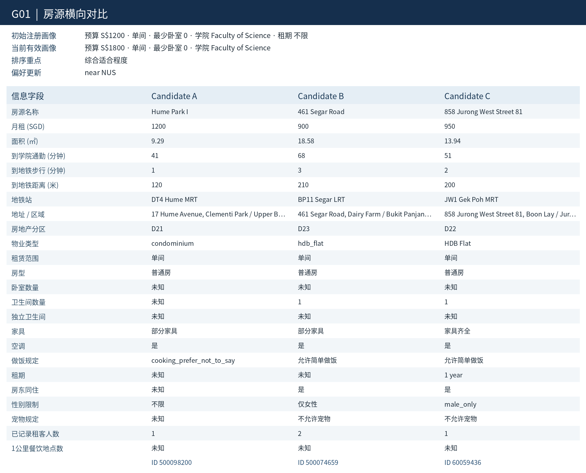
| Reviewer | A | B | C | Order | vs gold | vs agent |
|---|---|---|---|---|---|---|
| Jason | 1 | 3 | 2 | A > C > B | 1.00 | -1.00 |
| ljy | 2 | 3 | 1 | C > A > B | 0.33 | -0.33 |
| lys | 1 | 2 | 3 | A > B > C | 0.33 | -0.33 |
| wxy | 1 | 3 | 2 | A > C > B | 1.00 | -1.00 |
| zfy | 3 | 1 | 2 | B > C > A | -1.00 | 1.00 |
| Mean rank | 1.6 | 2.4 | 2.0 | A > C > B | 0.33 | -0.33 |
| Candidate | Listing ID | Source | Agent rank | Matches? | Gold rank | Reviewers ranking it first (ties count) |
|---|---|---|---|---|---|---|
| A | 500098200 | agent top 3 (11/05 run) | 3 | match | 48/89 | 3 |
| B | 500074659 | agent top 3 (11/05 run) | 1 | match | 85/89 | 1 |
| C | 60059436 | agent top 3 (11/05 run) | 2 | match | 76/89 | 1 |
The gold rank is the rank among all matching listings (for example 57/62); where the ranking values are identical, listings are ordered by ID, but count as tied in comparisons. The agent rank is the order of the agent's 11/05 recommendation.
Gold order: A > C > B · same first as gold: 3/5
Agent order (11/05 run): B > C > A · vs gold τ-b = -1.00
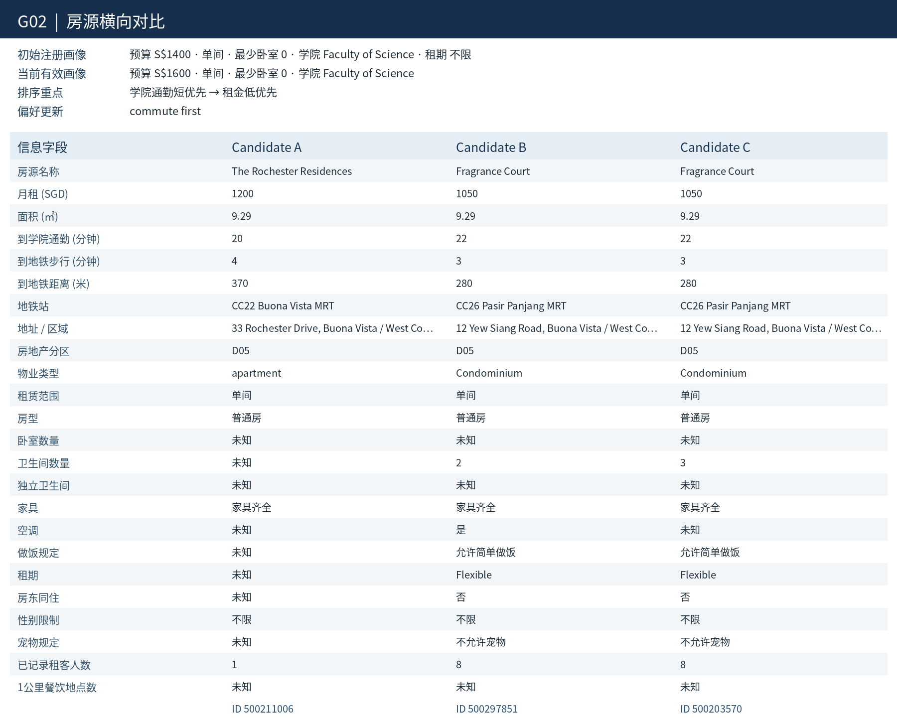
| Reviewer | A | B | C | Order | vs gold | vs agent |
|---|---|---|---|---|---|---|
| Jason | 1 | 2 | 3 | A > B > C | 0.82 | -1.00 |
| ljy | 1 | 3 | 2 | A > C > B | 0.82 | -0.33 |
| lys | 1 | 2 | 3 | A > B > C | 0.82 | -1.00 |
| wxy | 3 | 2 | 1 | C > B > A | -0.82 | 1.00 |
| zfy | 3 | 2 | 1 | C > B > A | -0.82 | 1.00 |
| Mean rank | 1.8 | 2.2 | 2.0 | A > C > B | 0.16 | -0.07 |
| Candidate | Listing ID | Source | Agent rank | Matches? | Gold rank | Reviewers ranking it first (ties count) |
|---|---|---|---|---|---|---|
| A | 500211006 | agent top 3 (11/05 run) | 3 | match | 2/81 | 3 |
| B | 500297851 | agent top 3 (11/05 run) | 2 | match | 4/81 | 0 |
| C | 500203570 | agent top 3 (11/05 run) | 1 | match | 3/81 | 2 |
The gold rank is the rank among all matching listings (for example 57/62); where the ranking values are identical, listings are ordered by ID, but count as tied in comparisons. The agent rank is the order of the agent's 11/05 recommendation.
Gold order: A > B=C · same first as gold: 3/5
Agent order (11/05 run): C > B > A · vs gold τ-b = -0.82
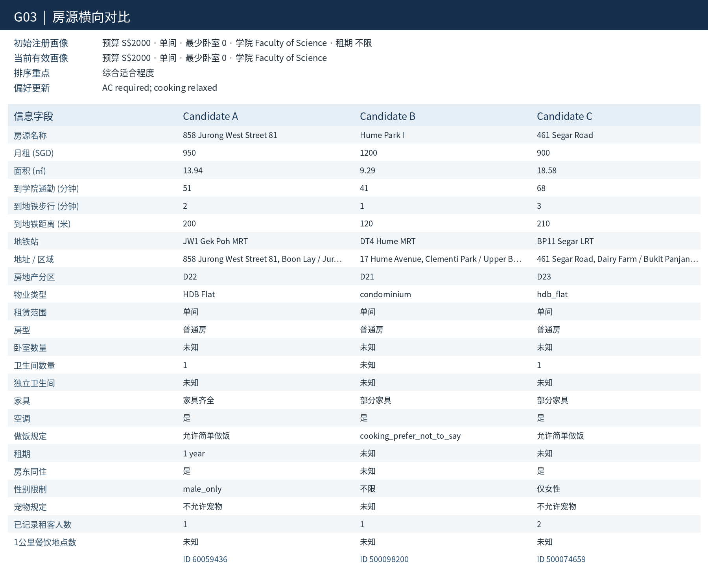
| Reviewer | A | B | C | Order | vs gold | vs agent |
|---|---|---|---|---|---|---|
| Jason | 3 | 1 | 2 | B > C > A | -0.33 | -0.33 |
| ljy | 1 | 2 | 3 | A > B > C | -0.33 | -0.33 |
| lys | 1 | 3 | 2 | A > C > B | 0.33 | 0.33 |
| wxy | 1 | 3 | 2 | A > C > B | 0.33 | 0.33 |
| zfy | 2 | 3 | 1 | C > A > B | 1.00 | 1.00 |
| Mean rank | 1.6 | 2.4 | 2.0 | A > C > B | 0.20 | 0.20 |
| Candidate | Listing ID | Source | Agent rank | Matches? | Gold rank | Reviewers ranking it first (ties count) |
|---|---|---|---|---|---|---|
| A | 60059436 | agent top 3 (11/05 run) | 2 | match | 7/55 | 3 |
| B | 500098200 | agent top 3 (11/05 run) | 3 | match | 15/55 | 1 |
| C | 500074659 | agent top 3 (11/05 run) | 1 | match | 4/55 | 1 |
The gold rank is the rank among all matching listings (for example 57/62); where the ranking values are identical, listings are ordered by ID, but count as tied in comparisons. The agent rank is the order of the agent's 11/05 recommendation.
Gold order: C > A > B · same first as gold: 1/5
Agent order (11/05 run): C > A > B · vs gold τ-b = 1.00
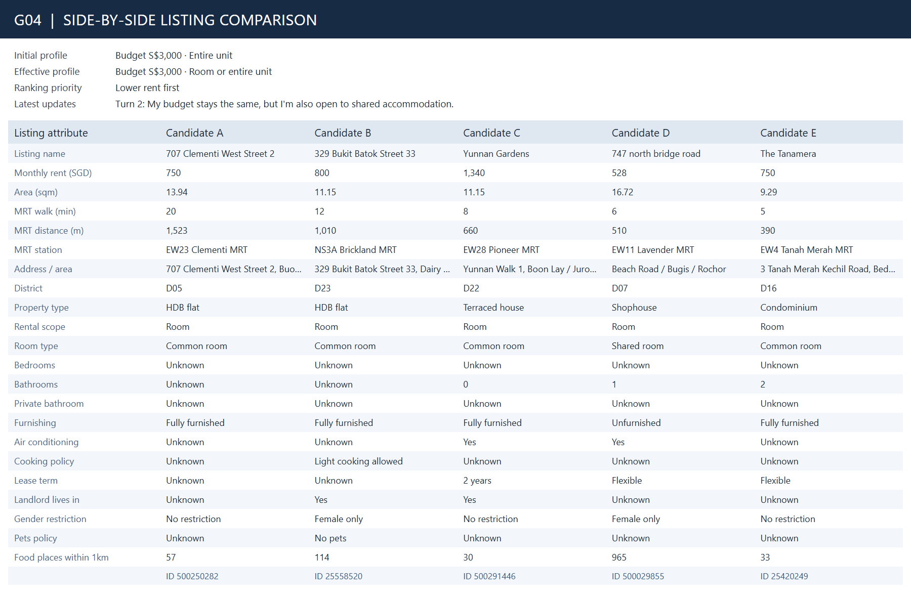
| Reviewer | A | B | C | D | E | Order | vs gold | vs system |
|---|---|---|---|---|---|---|---|---|
| Jason | 4 | 3 | 5 | 1 | 2 | D > E > B > A > C | 0.74 | 0.40 |
| ljy | 2 | 4 | 5 | 1 | 3 | D > A > E > B > C | 0.95 | 0.00 |
| lys | 3 | 2 | 5 | 4 | 1 | E > B > A > D > C | 0.11 | 0.20 |
| wxy | 3 | 4 | 5 | 1 | 2 | D > E > A > B > C | 0.95 | 0.20 |
| zfy | 4 | 5 | 1 | 2 | 3 | C > D > E > A > B | 0.11 | 0.20 |
| Mean rank | 3.2 | 3.6 | 4.2 | 1.8 | 2.2 | D > E > A > B > C | 0.57 | 0.20 |
| Candidate | Listing ID | Source | System rank | Matches? | Gold rank | Reviewers ranking it first (ties count) |
|---|---|---|---|---|---|---|
| A | 500250282 | gold top 3 | 108/125 | match | 3/125 | 0 |
| B | 25558520 | cheapest of the other matches | 76/125 | match | 4/125 | 0 |
| C | 500291446 | random from the gold answer | 51/125 | match | 45/125 | 1 |
| D | 500029855 | gold top 3 | 21/125 | match | 1/125 | 3 |
| E | 25420249 | gold top 3 | 14/125 | match | 2/125 | 1 |
The gold rank is the rank among all matching listings (for example 57/62); where the ranking values are identical, listings are ordered by ID, but count as tied in comparisons. The system rank is the frozen system's rank among all matching listings (without the model).
Gold order: D > A=E > B > C · same first as gold: 3/5
System order (the frozen system, without the model): E > D > C > B > A · vs gold τ-b = 0.11
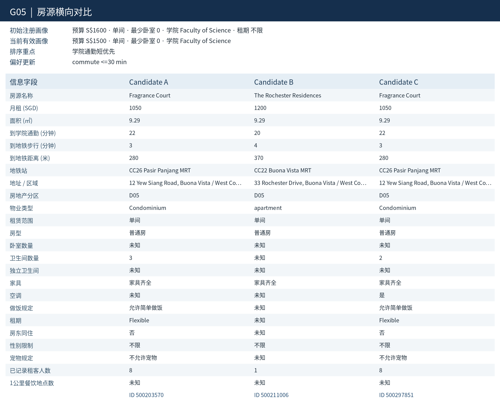
| Reviewer | A | B | C | Order | vs gold | vs agent |
|---|---|---|---|---|---|---|
| Jason | 2 | 3 | 1 | C > A > B | -0.82 | -1.00 |
| ljy | 3 | 1 | 2 | B > C > A | 0.82 | 0.33 |
| lys | 1 | 2 | 1 | A=C > B | -1.00 | -0.82 |
| wxy | 3 | 1 | 2 | B > C > A | 0.82 | 0.33 |
| zfy | 2 | 1 | 3 | B > A > C | 0.82 | 1.00 |
| Mean rank | 2.3 | 1.8 | 1.9 | B > C > A | 0.13 | -0.03 |
| Candidate | Listing ID | Source | Agent rank | Matches? | Gold rank | Reviewers ranking it first (ties count) |
|---|---|---|---|---|---|---|
| A | 500203570 | agent top 3 (11/05 run) | 2 | match | 3/19 | 1 |
| B | 500211006 | agent top 3 (11/05 run) | 1 | match | 2/19 | 3 |
| C | 500297851 | agent top 3 (11/05 run) | 3 | match | 4/19 | 2 |
The gold rank is the rank among all matching listings (for example 57/62); where the ranking values are identical, listings are ordered by ID, but count as tied in comparisons. The agent rank is the order of the agent's 11/05 recommendation.
Gold order: B > A=C · same first as gold: 3/5
Agent order (11/05 run): B > A > C · vs gold τ-b = 0.82